Section 4.4 Ellipses
By the end of this section, you should |
Subsection 4.4.1 Definition of an Ellipse
| Definition 4.4: Let F and F′ be two fixed points in the plane. An ellipse is the locus or set of all points in the plane such that the sum of the distances from each point to F and F′ is constant. That is, a point P is on the ellipse if and only if |PF|+ |PF′| = constant. (See Figure 4.18). |
The two fixed points, F and F′, are called foci (singular- focus) of the ellipse.
Note also the following terminologies and relationships about ellipse.
- The midpoint C between the foci F′ and F is called the center of the ellipse.
- The longest diameter (longest chord) V′V through F′ and F is called the major axis of the ellipse; and the chord BB′ through C which is perpendicular to V′V is called minor axis.
- The endpoints of the major axis, V′ and V, are called the vertices of the ellipse.
- From the definition, |V′F′| + |V′F| = |VF′| + |VF| ⇒ |V′F′| = |VF| ⇒ |CV′| = |CV|. Hence, C is the midpoint of V′V. We denote the length of the major axis by 2a. That is, |CV| = a.
⇒ |VF′| + |VF| = |V′V| = 2a.
⇒ |PF′| + |PF| = 2a, for any point P on the ellipse.
- We let |BC| = b. (You can show that C is the midpoint of BB′. So, |B′C| = b. )
- The distance from the center C to a focus F (or F′) is denoted by c, i.e., |CF| = c = |CF′|.
- Now, since |BF′|+ |BF| = 2a and BC is a perpendicular bisector of F′F, we obtain that
|BF′| = |BF|= a . Hence, using the Pythagoras Theorem on ∆BCF, we obtain
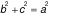
or b2 = a2− c2.(Note: a ≥ b. If a=b, the ellipse would be a circle with radius r =a =b ).
- The ratio of the distance between the two foci to the length of the major axis is called the eccentricity of the ellipse, and denoted by e. That is,
e =
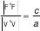
. (Note that 0 < e < 1 because 0 < c < a )Exercise 4.4.1
|
Use the definition of ellipse and the given information to answer or solve each of the following problems.
1. Suppose F′ and F are the foci of an ellipse and B′ and B are the endpoints of the minor axis of the ellipse, as in Figure 4.18. Then, show that each of the followings hold.
(a) ∆BF′F is isosceles triangle.
(b) The quadrilateral BF′B′F is a rhombus.
(c) FF′ is perpendicular bisector of BB′ ; and also BB′ is perpendicular bisector of FF′.
(d) If the length of the major axis is 2a, length of minor axis is |BB′| = 2b, and |F′F|=2c, for some positive a, b, c, then
(i) |BF| = a (ii) a2 = b2 + c2
2. Suppose the vertices of an ellipse are (±2, 0) and its foci are (±1, 0).
(a) Where is the center of the ellipse?
(b) Find the endpoints of its minor axis.
(c) Find the lengths of the major and minor axes.
(d) Determine whether each of the following points is on the ellipse or not.
(i) (1, 3/2) (ii) (3/2, −1) (iii) (−1, 3/2) (iv) (−1, −3/2) (v) (1, 1)
(Note: By the definition, a point is on the ellipse iff the sum of its distances to the two foci is 2a )
3. Suppose the endpoints of the major axis of an ellipse are (0, ±2) and the end points of its minor axis are (±1, 0).
(a) Where is the center of the ellipse?
(b) Find the coordinates of the foci.
(c) Determine whether each of the following points is on the ellipse or not.
(i) (ii) (iii) (iv)
4. Suppose the endpoints of the minor axis of an ellipse are (1, ±3) and its eccentricity is 0.8. Find the coordinates of (a) the center, (b) the foci , (c) the vertices of the ellipse.
|
Subsection 4.4.2 Equation of an Ellipse
In order to obtain the simplest equation for an ellipse, we place the ellipse at standard position. An ellipse is said to be at standard position when its center is at the origin and its major axis lies on either the x-axis or y-axis.
I. Equation of an ellipse at standard position:
There are two possible situations, namely, when the major axis lies on x-axis (called horizontal ellipse) and when the major axis lies on y-axis (called vertical ellipse). We first consider a horizontal ellipse as in Figure 4.19
Let the center of the ellipse be at the origin, C(0,0) and foci at F′(−c,0), F (c,0) and vertices at
(−a,0) and (a,0) (see Figure 4.19). Then, a point P(x,y) is on the ellipse iff
|PF′| + |PF| = 2a .
That is,
or
Squaring both sides we get
which simplifies to
Again squaring both sides, we get
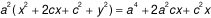
which becomes
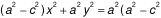
Now recalling that
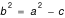
and dividing both sides by a2b2, the equation becomes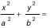 |
(Equation of horizontal ellipse at standard position,
vertices (±a, 0), foci (±c, 0), where c2 = a2− b2 )
|
For a vertical ellipse at standard position, the same procedure gives the equation
|
(Equation of vertical ellipse at standard position,
vertices (0, ±a), foci (0, ±c ), where c2 = a2− b2 )
|
Note: Notice that here, for vertical ellipse, the larger denominator a2 is under y2.
Example 4.18: Locate the vertices and foci of 16x2 + 9y2 =144 and sketch its graph.
Solution: Dividing both sides of the equation by 144, we get:
or .
This is equation of a vertical ellipse at standard position with a=4, so vertices at (0, ±4), and
b=3; i.e., endpoints of the minor axis at (±3, 0). Since c2 = a2−b2 =7 ⇒ , the foci are . The graph is sketched in Figure 4.20.
(II) Equation of shifted Ellipses:
When an ellipse is not at standard position but with center at a point C(h,k), then we can still obtain its equation by considering translation of the xy-axes in such a way that its origin translated to the point C(h,k). This result in a new X′Y′ coordinate system whose origin O′ is at C(h,k) so that the ellipse is at standard position relative to the X′Y′ system( see, Figure 4.21)
Consequently, the equation of the horizontal and vertical ellipses relative to the new X′Y′ coordinate system with (x′, y′) coordinate points are
and
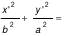
, . . . . . . . . (I).respectively. Since the origin of the new coordinate system is at the point (h,k) of the xy-coordinate system, the relationship between a point (x,y) of the xy-coordinate system and (x′,y′) of the new coordinate system is given by (x, y) = (x′,y′) + (h, k). That is,
x′ = x − h, and y′ = y − k .
Thus, in the original xy-coordinate system the equations of the horizontal and vertical ellipses with center C(h, k), lengths of major axis = 2a and minor axis = 2b are, respectively, given by
| (Standard equation of horizontal ellipse with center C(h,k) ) |
and
| (Standard equation of vertical ellipse with center C(h,k) ) |
Example 4.19: The endpoints of the major axis of an ellipse are at (−3,4) and (7,4) and its eccentricity is 0.6. Find the equation of the ellipse and its foci.
Solution: The given vertices are at V′(−3,4) and V(7,4) implies that 2a = |V′V| = 10 ⇒ a = 5;
and the center C(h,k) is the midpoint of V′V ⇒ . Moreover, eccentricity = c/a = 0.6 ⇒ c = 5×0.6 = 3. Hence, b2 = a2 − c2 = 25−9 = 16. Note that the major axis V’V is horizontal. Therefore, using the standard equation of a horizontal ellipse, the equation of the ellipse is
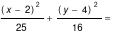
.|
Now, as the center (h,k) = (2,4), c=3 and V′V is horizontal, the foci are at (h ± c, k) = (2 ± 3, 4).
That is, the foci are at F′(−1, 4) and F(5, 4).
Moreover, the endpoints of major axis are at
(h, k± b) = (2, 4± 4) ⇒ B′=(2,0) and B=(2,8).
The graph of the ellipse is sketched in Figure 4.22.
|
Example 4.20: Find the center, foci and vertices of
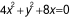
and sketch its graph
Solution: Group the x-terms of the equation and complete the square:
⇒ 4(x2+2x+1) + y 2= 4 (divide both sides by 4)
⇒
This is equation of a vertical ellipse (major axis parallel to the y-axis), center C=(h,k) = (–1,0),
|
a =2, b=1. ⇒
Thus, foci : F′(–1, –√3 ) and F(–1, √3 ) ,
Vertices: V = (–1, 2), V′= (–1, –2);
Endpoints of minor axis: B=(0,0), B′=(–2,0);
The graph of the ellipse is sketched in
Figure 4.23.
|
|
Remark: Consider the equation: Ax2 + Cy2 + Dx + Ey + F = 0,
when A and C have the same sign. So, without lose of generality, let A >0 and C >0.
By completing the squares you can show that this equation is equivalent to
.
From this you can conclude that the given equation represents:-
|
Exercise 4.4.2
|
For questions 1 to 13, find an equation of the ellipse with the given properties and sketch its graph.
1. Foci at (± 2, 0) and a vertex at (5, 0)
2. A focus at (0, −3) and vertices at (0, ±5)
3. Foci at (2, 3) , (2,7) and a vertex at (2, 0)
4. Foci at (0, −1) , (8,−1) and a vertex at (9, −1)
5. Center at (6,1) , one focus at (3,1) and one vertex at (10, 1)
6. Foci at (2, ±1) and the length of the major axis is 4.
7. Foci at (2, 0), (2, 6) and the length of the minor axis is 5.
8. The distance between its foci is
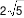 and the endpoints of its minor axis are (–1, –2) and (3,–2).9. Vertices at (±5, 0) and the ellipse passes through (−3, 4).
10. Center at (1, 4), a vertex at (10, 4) , and one of the endpoints of the minor axis is (1, 2).
11. The ellipse passes through (−1, 1) and
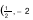 with center at origin.12. The endpoints of the major axis are (3, −4) and (3, 4) , and the ellipse passes through the origin
13. The endpoints of the minor axis are (3, −2) and (3, 2) , and the ellipse passes through the origin
For questions 14 to 22 find the center, foci and vertices of the ellipse having the given equation and sketch its graph.
14. 17.
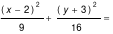 20. 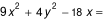
15.
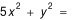 18. 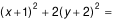 21. 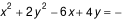
16.
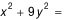 19. 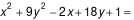 22. 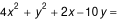
|
|---|
|
23. Consider the equation
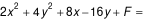 . Find all values of F such that the graph of the equation(a) is an ellipse. (b) is a point. (c) consists of no points at all.
|